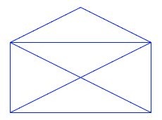
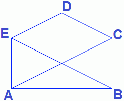
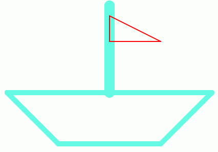
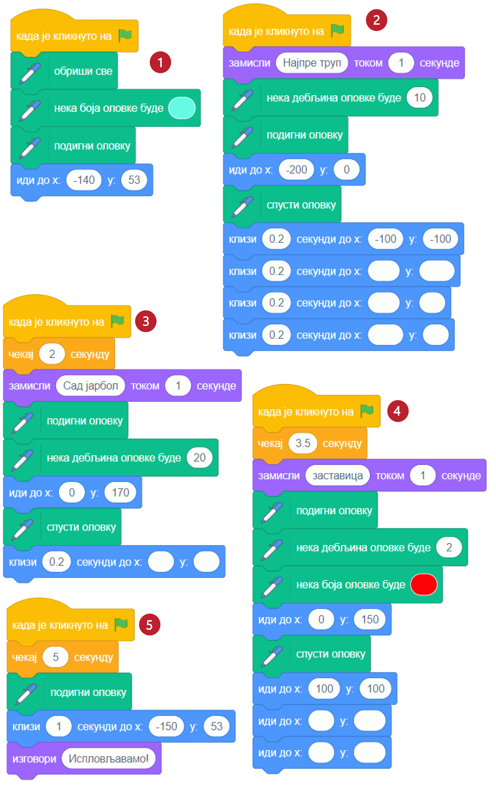

6.1. Цртање¶
У оквиру овог часа научићеш:
Како лик може да црта док се креће.
Зашто спуштамо и подижемо оловку.
Како мењамо боју и дебљину оловке.
Како кретањем напред и окретањем направити цртеж.
У претходној лекцији смо научили како можемо управљати кретањем лика помоћу дирки са тастатуре. Сада ћемо скриптама за кретање додати могућност да лик притом оставља траг. Сваки лик у Скречу може да оставља траг приликом кретања, то јест да црта. Блокови помоћу којих задајемо ликовима кад и како да цртају налазе се у једном од стандардних проширења Скреча – у проширењу Оловка. Ево како можеш да додаш ово проширење у своје окружење:
Кликни на дугме
 у доњем левом углу екрана (испод ознака свих група блокова).
у доњем левом углу екрана (испод ознака свих група блокова).Изабери проширење Оловка.
Примети да се појавила нова група блокова – Оловка. Кликни на ту групу да видиш какве блокове она садржи.
Можемо да замислимо да је додавањем овог проширења сваки лик добио по једну оловку, којој може да подешава боју и дебљину. Блоком кажемо лику да спусти своју оловку, то јест активирамо остављање трага, а блоком  га деактивирамо. Блок
га деактивирамо. Блок  уклања трагове свих ликова. Немој да мешаш овај блок са блоком
уклања трагове свих ликова. Немој да мешаш овај блок са блоком  , који сакрива сам лик, а не његове трагове.
, који сакрива сам лик, а не његове трагове.
Испробај одмах ова три блока. На пример, овако можеш да нацрташ једну праву линију:

Можеш и да надовежеш неколико блокова кретања, линија ће пратити лика све док је оловка спуштена. Ако желиш, испробај и блокове за задавање дебљине трага и за задавање боје.
Погледај наредни видео.
У овом видеу погледаћемо још једном како можемо да употребљавамо оловку у Скречу.

{kind=link}
Примери¶
Пример 1 – Коверта¶
Умеш ли да нацрташ овакву коверту једним потезом?
{kind=link}
Ако ти задатак није познат од раније, покушај сада да га решиш, користећи обичну оловку и папир. Да ти не кваримо забаву, ми смо наше решење за сада сакрили. Када смислиш решење (или ако одустанеш од решавања), погледај и наше решење, јер ћемо га користити за смишљање скрипте која црта исту овакву коверту.
Решење: Ако означимо тачке као на слици, линија се може нацртати једним потезом ако тачке спајамо овим редоследом: \(A - E - D - C - B - A - C - E - B\).
{kind=link}
Остави решење да буде видљиво, јер ће нам бити потребно у наставку. Да бисмо коверту нацртали у Скречу, потребно је да изаберемо где ће се на позорници налазити која тачка.
Нека коверта буде широка 200 корака и нека се налази на средини позорнице по ширини. Онда х координата за тачке A и E треба да буде -100, за тачку D координата х треба да буде 0, а за тачке B и C координата х треба да буде +100. Према томе, за сада смо одредили да је \(A(-100, \_), B(100, \_), C(100, \_), D(0, \_), E(-100, \_)\).
Изаберимо још да је коверта висока 150 корака (100 за затворену коверту и 50 за део који се пресавија). Полазећи од тога да је врх коверте у тачки (0, 50), добијамо да је у координата за тачку D 50, за тачке E и C координата у је 0, а за тачке A и B координата у је -100. Сада имамо све координате: \(A(-100, -100), B(100, -100), C(100, 0), D(0, 50), E(-100, 0)\).
Сада само треба да убацимо ове координате у блокове кретања. Користићемо блок  радије него
радије него  , да бисмо могли да пратимо цртање и лакше поправимо скрипту ако буде потребно.
, да бисмо могли да пратимо цртање и лакше поправимо скрипту ако буде потребно.
Лик на почетку постављамо у тачку \(A\), а затим га пуштамо да клизи редом ка тачкама \(E, D, C, B, A, C, E, B\), као у решењу полазне мозгалице. Одговарајућа скрипта изгледа овако.
{kind=link}
Кликни на следећу слику да видиш како ради одговарајући програм.
Пример 2 – Лађа¶
У овом примеру ћемо нацртати једну овакву лађу.
{kind=link}
Слика се састоји од три дела: трупа, јарбола и заставице. Да нам скрипта не би била предугачка и тешка за праћење, поделићемо је у целине. У првој целини бришемо претходна цртања, искључујемо цртање (подижемо оловку) и постављамо мачка на палубу. У свакој од следеће три целине цртамо по један део лађе (труп, јарбол и заставицу), а у последњој, петој целини, поново постављамо мачка на палубу.
Да ових пет скрипти не би цртале истовремено и мешале се једна другој у посао, неке од њих ће на почетку да чекају колико је потребно да претходне целине заврше са радом.
Поједини бројеви из ових скрипти су изостављени. Твој задатак је да их одредиш и упишеш. Размишљај слично као када смо цртали коверту. Ако ти из првог покушаја цртеж не испадне како треба, размисли и пробај поново.
{kind=link}
Кликни на следећу слику да видиш како ради одговарајући програм.
Шта смо научили¶
У овој лекцији показали смо како у своје окружење можеш да додаш стандарно проширење за цртање – групу блокова Оловка. У Скречу сваки лик има виртуелну оловку којом може да црта приликом свог кретања по позорници. Виртуелна оловка има облик округле четкице за коју се могу задати дебљина, боја и сенка. Кроз примере пројеката и вежбе показали смо како повезивањем блокова из групе Кретање и групе Оловка можемо да креирамо различите цртеже.
Додатак¶
Ако желиш, погледај поглавље „Хајде да цртамо” у Петљином практикуму. Тамо можеш да нађеш још нека објашњења, корисне савете и идеје. На пример, објашњење како да лик оловке црта својим врхом (које смо помињали у задатку Слова С, К, Р, Е, Ч) налази се у овом поглављу, а можеш сазнати и како ради блок  из групе блокова Оловка и друге занимљиве ствари.
из групе блокова Оловка и друге занимљиве ствари.
Петљин студио Корњача графика на сајту Скреча садржи урађене пројекте за задатке сличне онима које смо овде решавали.

Провери своје знање пролазећи кроз наредна питања и вежбе.